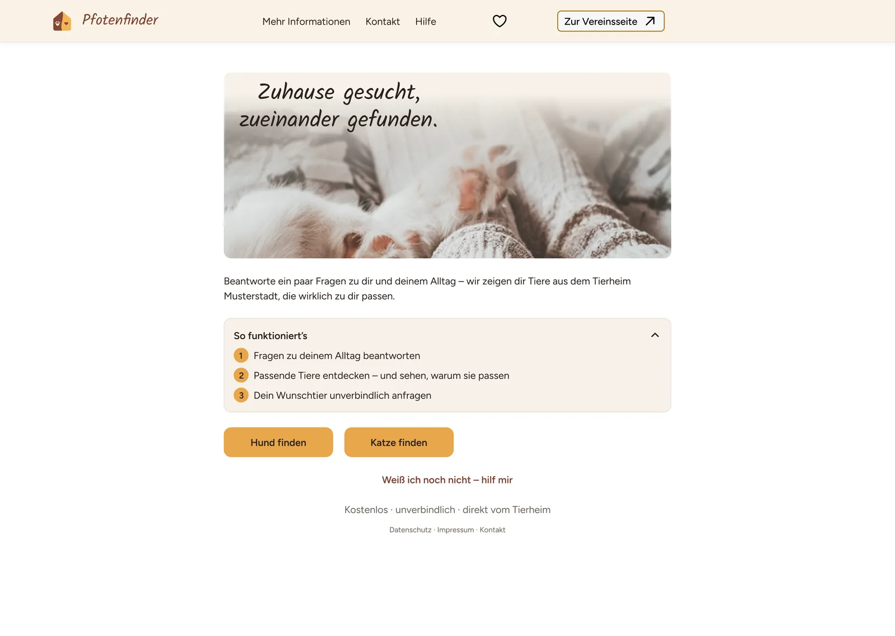

- UX research
- Concept
- Prototyping
Pfotenfinder
Matching shelter animals with the right homes
Many adoptions don't fail for lack of good will, but for questioning the fit too late. Pfotenfinder flips the search: first figure out what fits your everyday life, then fall in love.
Read case study: Pfotenfinder